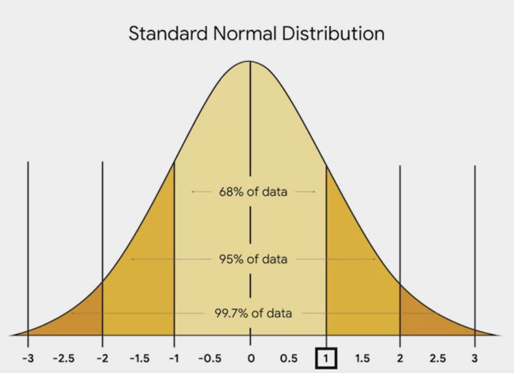
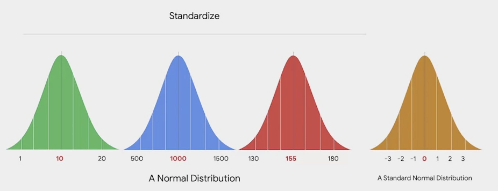
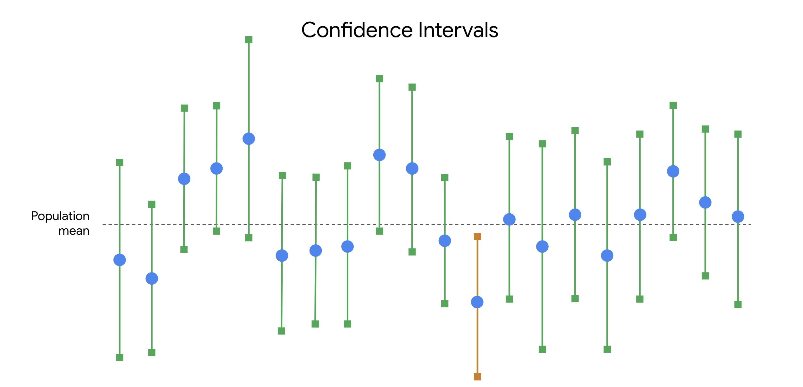

import mathNotebook for Statistics
About
This notebook is for me to record my notes in learning statistics. It includes specific math formulas, examples and how to calculate them in Python. Some notes are directly copied from various different sources.
Packages used
Conditional Probability
Bayes’ theorem
Bayes’s theorem provides a way to update the probability of an event based on new information about the event.
In Bayesian statistics, prior probability refers to the probability of an event before new data is collected. Posterior probability is the updated probability of an event based on new data. Posterior means occurring after.
\[P(A \mid B) = \frac{ P(B \mid A) * P(A) }{ P(B) }\]
Event A = Rain
Event B = Cloudy
Now we are trying to get the probaility of A given event B.
This means the probability of rain, given it’s cloudy.
This is also called posterior probability.
\[P(Rain \mid Cloud) = \frac{ P(Cloud \mid Rain) * P(Rain) }{ P(Cloudy) }\]
Let’s say below are the probability of each event:
- Overall chance of rain = 10%
- All days start off cloudy = 40%
- Rainy days start of cloudy (P(Cloud|Rain)) = 50%
\[P(Rain \mid Cloud) = \frac{ 50\% * 10\% }{ 40\% }\]
p_a_b = 0.5*0.1/0.4
print(p_a_b)0.125\[P(Rain \mid Cloud) = 12.5%\]
Bayes’ theorem - expaned version
Sometimes you don’t know the probability of event B, which is in the denominator of the equation for the basic Bayes’ theorem. In that case, you can use the expanded version of Bayes’ theorem, because you don’t need to know the probability of event B to use the expanded version.
\[P(A \mid B) = \frac{P(B \mid A) * P(A)} {P(B \mid A) * P(A) + P(B \mid not A) * P(not A)}\]
Let’s say we are conducting test for a medical condition. Below are the related probability:
| Condition | Probability | Variable |
|---|---|---|
| Having the medical condition | 1% | P(A) |
| Test positive | unknown | P(B) |
| Given test is positive, has the medical condition | 95% | P(B | A) |
| Given test is positive, doesn’t have the medical condition | 2% | P(B | not A) |
| Does not have the medical condition | 99% | 1-P(A) |
Now we are trying to find the probability of the person actually having the medical condition, given the test is positive.
This would be P(A | B).
We cannot use the basic Bayes’ theorem as the P(B) is unknown. This is when we need the expaned version.
Putting all available variables into the formula will look like this: \[ P(A \mid B) = \frac{0.95 \times 0.01}{(0.95 \times 0.01) + (0.02 \times 0.99)} \]
P_A_B = 0.95 * 0.01 / (0.95*0.01 + 0.02 * 0.99)
print(P_A_B)0.3242320819112628\[P(A \mid B) = 32.4%\]
Case study - calculate churn rate for a customer type with Bayes’ theorem (or something simplier)
Suppose you want to calculate the churn rate of a specific type of customer, e.g. UK customer.
Given you know the number of customer that are in UK, and the number of churned customer in UK, you can easily calculate their churn rate.
Below is a simple data set:
| Type | Number of customer |
|---|---|
| Total number of customer | 100 |
| Number of churned customer | 60 |
| Number of UK customer | 50 |
| Number of churned UK customer | 30 |
\[\text{Churn rate of UK customer} = \frac{\text{Number of churned UK customer}} {\text{Number of UK customer}}\]
\[\text{Churn rate of UK customer} = \frac{30} {50}\]
churn_rate = 30/50
print(f'Churn rate of UK customer: {churn_rate}')Churn rate of UK customer: 0.6Now look at the Bayes’ theorem \[P(A \mid B) = \frac{ P(B \mid A) * P(A) }{ P(B) }\]
Put the numbers into the equation \[ \text{Event A} = \text{Churn rate by all customer}\] \[ \text{Event B} = \text{Percentage of UK customer}\]
\[ P(A \mid B) = \frac{\frac{30}{60} \times \frac{60}{100}}{\frac{50}{100}} \]
\[P(A \mid B) = \frac{30}{60} * \frac{60}{100} * \frac{100}{50}\] \[P(A \mid B) = \frac{30}{50}\]
print(f'P(B|A) = {30/50}')P(B|A) = 0.6They both return the same result.
When we know enough variables, it is sufficient for us to directly calculate the churn rate. However when we don’t have enough data, or when the scenario is new, we may need to apply the Bayes’ theorem to get the value we need.
Discrete Probability Distribution
Binomial distribtuion
Binomial distribution referes to the calculation of the probability of k out of n ways.
Let’s say we know in a coin toss, there is a 50% chance for it to be a head or a tail. If we toss it for 10 times, what is the probability that we get 5 heads? We can use binomial distribution to calculate the value.
Note that to use binomial distribution, the two results must be mutually exclusive. Like in a coin toss, there can only be a head or toss.
Or in a roll of die, you either get a 3 or not get a 3.
This is how we calculate the binomial distribution:
\[P(x=k) = \frac{n!} {k!(n-k)!} * p^k (1-p)^{n-k}\]
The meaning of each variables: \[k = \text{number of success}\]
\[n = \text{number of trials}\]
\[p = \text{probability of success on a given trial}\]
We can break this down into 2 parts.
n-choose-k
\[\frac{n!} {k!(n-k)!}\]
This is known as n-choose-k, which refers to the number of outcome we want, or the number of success we can get at the given number of trials.
Say you want to know out of 3 coin toss, the number of outcomes where you can get 2 heads.
The formula would be:
\[\text{n-choose-k}=\frac{3!} {2!(3-2)!}\] \[\text{n-choose-k}=\frac{3*2*1} {2*1*1}\]
n_choose_k = 3*2*1/2*1*1
print(f'n-choose-k = {n_choose_k}')n-choose-k = 3.0Probability of each outcome
Now that we know what is the number of outcomes we can get 2 heads, we need to know the probability of each outcome as well, which will allow us to calculate the probability of x=k.
\[p^k(1-p)^{n-k}\]
Now we know the chances of getting a head in each toss is 50%
Put it into work, it would be: \[0.5^2(1-0.5)^{3-2}\]
\[=0.5*0.5*0.5\]
prob_of_each_outcome = 0.5* 0.5 * (1-0.5)
print(f'Probability of each outcome = {prob_of_each_outcome}')Probability of each outcome = 0.125In cases like a coin toss, where you know the chance is 50%, there is also an easier way to get the probability of each outcome.
Say for each coin toss, you can get 2 possible outcomes. For 2 coin toss, you get 2^2, which is 4 outcome.
Now for 3 coin toss, you will get the total possible outcome of 2^3, which is 8.
The probability of getting each outcome is 1/8, which is also 0.125.
print(f'total number of possible outcome = {2**3}')
print(f'proabbility of each outcome = {1/2**3}')total number of possible outcome = 8
proabbility of each outcome = 0.125Final outcome
Now that we can put the two together.
\[p(x=k) = n-choose-k * \text{probability of each outcome}\] \[p(x=k) = 3*0.125\]
binomial_dist = 3*0.125
print(f'p(x=k) = {binomial_dist}')p(x=k) = 0.375(WIP)Case study: chances of customer make a return to a store
You are working for a retail store. You know that 10% of all customers visiting the store would make a return.
Now 3 customers visit the store, what is the probability that they will return?
Let’s apply the Binomial distribution formula to all possible situations.
Result should be like below:
| Number of success | P |
|---|---|
| p(x=0) | 0.729 |
| p(x=1) | 0.243 |
| p(x=2) | 0.027 |
Poisson distribution
Possion distribution models the probability that a certain number of events will occur during a specific time period.
Below are some practical use cases
- Calls per hour for a customer service call centre
- Visitors per hour for a website
- Customers per day at a restaurant
Below are necessary for a Poisson experiment
- The number of events in the experiment can be counted
- The mean number of events that occur during a specific time period is known
- Each event is independent
Poisson distribution formula
\[p(x=k) = \frac{λ^k e^{-λ}}{k!}\]
- λ (lambda) is the mean number of events that occur during a specific time period
- k refers to the number of events
- e: a constant equal to approximately 2.71828
- e^-λ: 1/e^λ
Example: possible number of order in a drive through restaurant (WIP)
Let’s say we know that the average number of order per minute is 2.
We can use the Poisson formula to determine the probability of the restaurant receiving 0, 1, 2 or 3 orders per minute.
| Number of orders | P |
|---|---|
| p(x=0) | 0.1353 |
| p(x=1) | 0.2707 |
| p(x=2) | 0.2707 |
| p(x=3) | 0.1805 |
Possion VS Binomial
| Given | Want to Find | |
|---|---|---|
| Poisson | The average probability of an event happening for a specific time period | The probability of a certain number of events happening in that time period |
| Binomial | An exact probability of an event happening | The probability of the event happening a certain number of times in a repeated trial |
Continuous Probability
The normal distribution
This is also know as the bell curve. It has the following features:
- The shape is a bell curve
- The mean is located at the centre of the curve
- The curve is symmetrical on both sides of the center
- The total area under the curve equals 1
The bell curve follows the emprical rule
- 68% of values fall within 1 standard deviation of the mean
- 95% of values fall within 2 standard deviation of the mean
- 99.7% of values fall within 3 standard deviation of the mean
Z-score
Z-score allows us to compare the normal distribution of different dataset by standardise the normal distribution. It looks at the normal distribution in terms of standard deviation. This is also known as standarised normal distribution


Formula
This is how we calculate the Z-score: \[Z = \frac{x-μ}{σ}\] \[x = \text{a single data value/raw score}\] \[μ/mu = \text{the population mean}\] \[σ/sigma = \text{the poplation standard deviation}\]
Now let’s say you have a test score of 133. The test has a mean score of 100 and a standard deviation of 15. The equation would look like this: \[Z = \frac{133-100}{15}\]
z_score = (133-100)/15
print(f'Z-score: {z_score}')Z-score: 2.2Python
You can use the z-score function in the scipy package to calculate the z-score of each datapoint in your dataframe.
Sampling distribution
Standard Error of the Mean
The standard error formula is base on the math assumption of repeated sampling, and it calculates the possible range of the actual mean based on one sample.
\[\text{Standard error of the mean} = \frac{s}{\sqrt{n}}\] \[s = \text{The sample standard deviation}\] \[n = \text{The sample size}\]
The larger the sample size is,the smaller the error would be.
Now let’s say we have a sample of 100 penguine, which has a mean weight of 3 pounds and a standard deviation of 1 pound.
\[\text{Stand error of the mean} = \frac{1}{\sqrt{100}}\]
sample_std = 1
n_sqr = math.sqrt(100)
standard_error = sample_std/n_sqr
print(standard_error)0.1Now while the best estimated mean of the population will still be 3 pounds, you know that the mean will vary with a standard deviation of 0.1 pound.
The Central Limit Theorem
The sample distribution of the mean approaches a normal distribution when the sample size increases.
Standard Error of the Proportion
Theory and formula
The standard error of proportion measures the standard error of a sampling proportion.
\[SE(\hat{p}) = \sqrt{\frac{\hat{p}(1-\hat{p})}{n}}\]
\[\hat{p} (\text{p hat}) = \text{population proportion}\]
\[n = \text{sample size}\]
Say you are researching a population of 100,000, in a sample with 100 people, 10% of them prefer slipon sneaker.
\[SE(\hat{p}) = \sqrt{\frac{0.1(1-0.1)}{100}}\]
import math
phat = 0.1
sample = 100
sample_error = math.sqrt(0.1*(1-0.1)/100)
print(sample_error)0.030000000000000002The sample error is 0.03, which means that the estimate population proportion who prefer slipon sneaker is 10%, which would deviate for +/-3%.
Case study: apply the standard error of the proportion to churn rate
Say you know that you have 100 customers (current and churned) in Scotland, and their churn rate is 60%. You can use the standard error formula to understand how much the sample proportion (in your case, the sample churn rate) is expected to vary from the true population proportion (the true churn rate for all current and future customers).
import math
# Given data
p_hat = 0.60 # Sample churn rate
n = 100 # Sample size
# Standard error calculation
standard_error = math.sqrt((p_hat * (1 - p_hat)) / n)
print(standard_error)0.04898979485566356The standard error is around 0.05, which means that the standard deviation of the churn rate for current and future Scotland customer will be at 60%, vary for +-5%.
You can further calculate the confidence level base on the standard error and sample size, to understand how reliable this is.
Confidence level
Imagine you want to estimate the mean weight of a population of 10,000 penguins. Instead of weighing every single penguin, you select a sample of 100 penguins. The mean weight of your sample is 30 pounds. Based on your sample data, you construct a 95% confidence interval between 28 pounds and 32 pounds.
95 CI [28, 32]
Usual confidence level choosen are as follow:
- 90%
- 95%
- 99%
Interpret the confidence interval
Technically, 95% confidence means that if you take repeated random samples from a population, and construct a confidence interval for each sample using the same method, you can expect that 95% of these intervals will capture the population mean. You can also expect that 5% of the total will not capture the population mean.
The confidence level refers to the long-term success rate of the method, or the estimation process based on random sampling.
Imagine you take 20 random samples of 100 penguins each from the penguin population, and calculate a 95% confidence interval for each sample. You can expect that approximately 19 of the 20 intervals, or 95% of the total, will contain the actual population mean weight of 31 pounds. One such interval will be the range of values between 28 pounds and 32 pounds.

Incorrect interpretations
- There is a 95% probability that the population mean falls within the constructed interval. (It’s not true!)
What you can say is that if you take repeated random samples from the population, and construct a confidence interval for each sample using the same method, you can expect 95% of your intervals to capture the population mean.
Pro tip: Remember that a 95% confidence level refers to the success rate of the estimation process.
- 95% of all of the data values in the population fall within the interval (Also not true. )
Construct confidence interval for porportion
- Identify a sample statistic
- Choose a confidence level
- Find the margin of error
- Calculate the interval
Let’s say you work for election polling. Below would be the associate data point.
| Component | Metric | Data |
|---|---|---|
| Sample statistic | Percentage of sample that prefer candidate A | 55% |
| Confidence level | 95% | 1.96 |
| Standard error | Standard error of poportion from the sample (assume sample size is 100) | 5% |
| Margin of error | Assume a large sample size and normal distribution, it would be z-score * standard error | 1.96*0.05=0.098 |
| Upper limit of the interval | Sample stat + margin of error | 55%+9.8%=64.8% |
| Lower limit of the interval | Sample stat - margin of error | 55%-9.8%=45.2% |
| Confidence Interval | Upper limit - lower limit | 64.8%-45.2%=19.6% |
| Confidence Level | Z-score |
|---|---|
| 90% | 1.645 |
| 95% | 1.96 |
| 99% | 2.58 |
The formula for calculate margin of error in a large sample size would be:
\[\text{Margin of error} = \text{z-score}*\text{standard error}\]
Note that in a smaller sample size, we will need to use t-score to calculate the margin of error.
In the situation of polling, we will use the standard error of poportion for the standard error calculation:
\[SE(\hat{p}) = \sqrt{\frac{\hat{p}(1-\hat{p})}{n}}\]
\[\text{Sample proportion}=0.55\] \[\text{Sample size}=100\]
import math
p=0.55
n=100
se = math.sqrt(p*(1-p)/n)
print(f'Standard error of porportion: {se}')Standard error of porportion: 0.049749371855330994